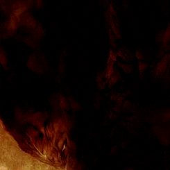

Los demonios de los Infiernos Abrasadores desean desde hace mucho tiempo invadir el reino de los hombres. Para ello, un poderoso grupo de señores demoníacos conocidos como los demonios menores exiliaron de los Infiernos a sus hermanos, los demonios mayores, y los enviaron al mundo humano de Santuario.
Con ellos vino la guerra. Los diablos mayores, Diablo, Mefisto y Baal, comenzaron a corromper a los humanos, convirtiéndolos en sirvientes oscuros y emponzoñando sus mentes con falsas promesas de riqueza y poder. Su intención, con el tiempo, era utilizar estas almas en su continua batalla contra los ángeles de los Altos Cielos.
Un grupo de valientes héroes hicieron causa común y lograron matar a los demonios mayores, pero la influencia de estos dejó zonas del mundo marcadas y desgarradas. Miles de personas perecieron, ciudades enteras fueron reducidas a cenizas, y toda una nación quedó en ruinas cuando la Piedra del Mundo fue destruida. Esta antigua reliquia había mantenido a Santuario a salvo de los ejércitos de ángeles y de demonios. Ahora ha quedado destruida, y sus poderes protectores han desaparecido

Actualmente, son pocos los supervivientes que cuentan historias sobre los Demonios Mayores, y mucha gente en Santuario ignora que la Piedra del Mundo haya incluso existido. No son conscientes de la amenaza cada vez mayor que para ellos supone la desaparición de la Piedra del Mundo, contentos con cultivar sus campos y vender sus productos en una paz relativa. Pero quienes vivieron de cerca la devastación de los demonios mayores recuerdan que dos de los demonios menores habitan todavía en los Infiernos Abrasadores... Azmodan, Señor del Pecado, y Belial, Señor de la Mentira. Estos grandes demonios no han olvidado el mundo de Santuario. De hecho, ahora se les presenta la oportunidad de apoderarse de él.
Ahora una estrella ha descendido de los cielos: un negro presagio que anuncia el fin de los días. Los atemorizados habitantes de Santuario se encomiendan a profecías y leyendas abandonadas en busca de respuestas. No tienen esperanza alguna frente a una arremetida total de los ejércitos de los Infiernos Abrasadores. Los héroes del pasado están lejos o han muerto.
Un nuevo campeón debe surgir…
Los barbarosn son viajeros salvajes que nunca rechazan un combate cuerpo a cuerpo. Sus poderosos pisotones, temibles saltos y tajos dobles matan instantáneamente a la mayoría de sus enemigos y provocan que los supervivientes salgan huyendo.
Los cazadores de demonios son justicieros incansables que ejecutan a sus objetivos con un amplio arsenal de armas a distancia. Se agazapan y afinan su puntería lejos del peligro, con la ayuda de arcos, trampas mortales y proyectiles que acaban con los monstruos que asolan su mundo.
Los magos son taumaturgos renegados que emplean sus propios cuerpos como catalizadores de energía arcana; han rechazado la vía del estudio que caracteriza a los demás usuarios de la magia. Manipulan todo tipo de fuerzas para desintegrar, quemar o congelar a sus enemigos. También controlan la luz y el tiempo para teletransportarse, crear poderosas ilusiones y desviar proyectiles.
Los médicos brujos son guerreros espirituales que invocan las almas de los muertos y criaturas terroríficas para que cumplan su voluntad. Al rodearse de zombis y alimañas invocados, tienen la libertad de atacar a sus enemigos cráneos explosivos, nubes de ácido y maleficios mortales
Los monjes son guerreros santos que canalizan el poder divino gracias a su férrea fuerza de voluntad. Las técnicas que dominan incluyen oleadas de curación, mantras de protección y ataques de fuerza divina.